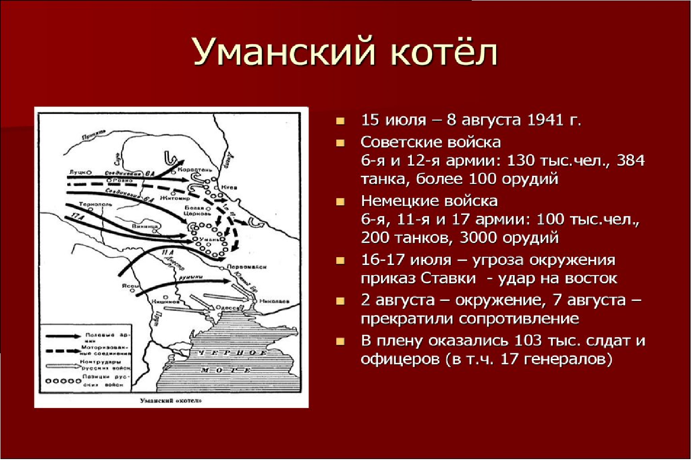
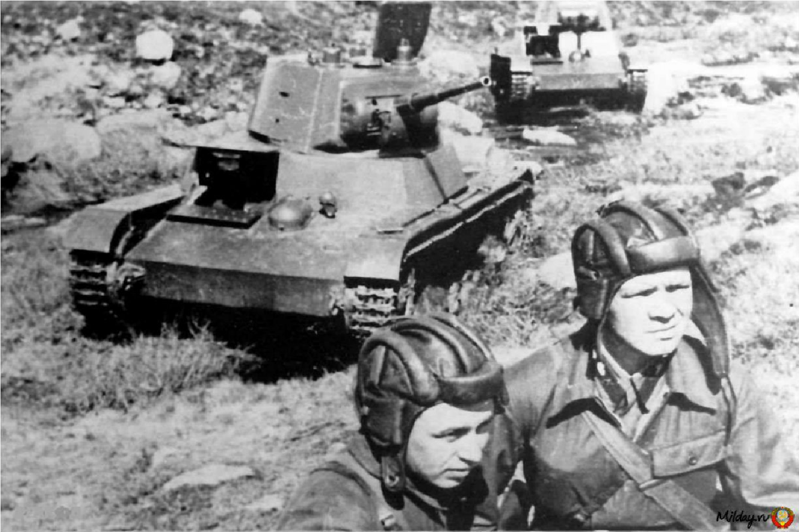
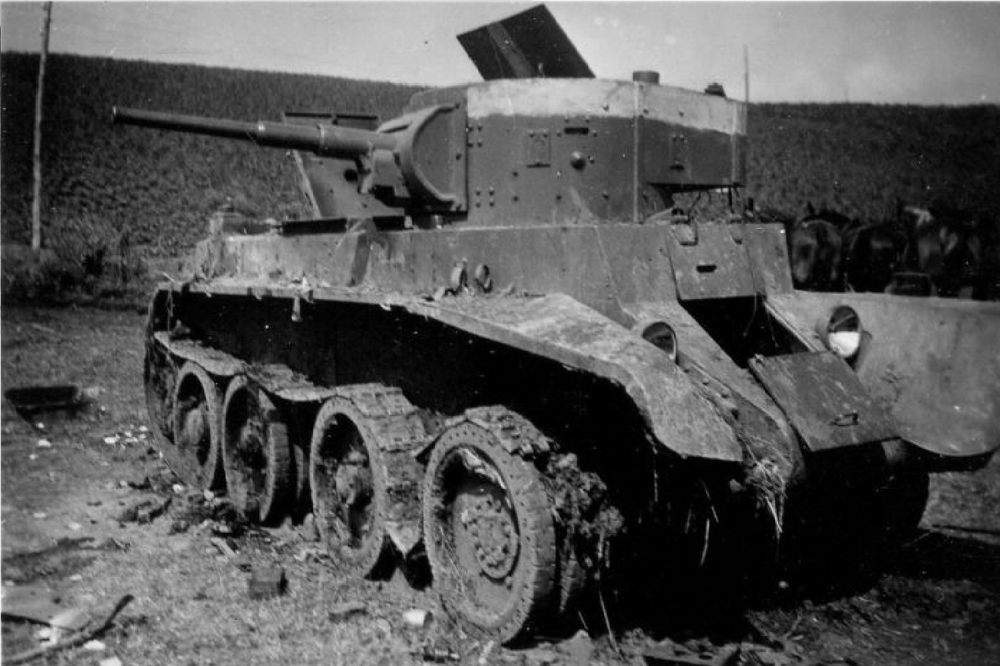

|  |
Сражение под Уманью — одно из значительных сражений Великой Отечественной войны, происходившее в 1941 году в ходе немецкого наступления на южном фронте. Оно произошло в сентябре и стало частью более широкой операции по окружению советских войск.
Предыстория
1. Стратегическое значение: Умань находилась на важной транспортной артерии и играла ключевую роль в обороне южных границ Советского Союза.
2. Наступление немцев: После начала операции "Барбаросса" немецкие войска стремительно продвигались по территории Украины, захватывая ключевые города и укрепления.
|
▎Ход сражения
1. Силы сторон:
- Советские войска: В районе Умани находились части 12-й армии под командованием генерала Д. Г. Павлова. Армия была недостаточно подготовлена к отражению мощного наступления противника.
- Немецкие войска: Группа армий "Юг" под командованием генерала Федора фон Бока, которая имела значительное превосходство в численности и технике.
2. Сражение:
- В середине Июля 1941 года немецкие войска начали наступление на Умань. Советские войска пытались организовать оборону, но столкнулись с мощными атаками противника.
- В результате стремительного наступления немцев 12-я армия была окружена, и советские войска оказались в ловушке.
3. Окружение:
- В августе 1941 года немецкие войска завершили окружение советских частей в районе Умани. Попытки прорыва не увенчались успехом, и многие советские солдаты были вынуждены сдаться.
|
 |
|  |
▎Итоги
- Падение Умани: Умань была захвачена немецкими войсками в июле-августе 1941 года.
- Потери: Окружение привело к значительным потерям среди советских войск, как в живой силе, так и в технике.
▎Значение
Сражение под Уманью стало важным уроком для советского командования, показав необходимость улучшения взаимодействия между частями и более тщательной подготовки к оборонительным операциям. Оно также продемонстрировало эффективность немецкой тактики окружения и быстрого наступления. Это сражение было частью более широкой картины катастрофических поражений Красной армии на начальном этапе войны, что впоследствии привело к пересмотру стратегий и методов ведения боевых действий. Вверх
|